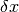
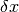
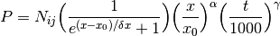

See also
Further information may be found in Ingraham et al. 2014 “Gemini Planet Imager Observational Calibrations II: Detector Performance and Characterization”
Image persistence is effect of the observed flux of previous images impacting the following observations as an elevated dark current (see Figure 1). Persistence has always been a constant problem of HgCdTe arrays and although the GPI array was chosen in part due to its low persistence, a correction is still required in order to obtain high-precision photometry. It should be noted that many misconceptions exist regarding persistence including that it can be attenuated with resets, or that it is a response due to detector saturation, when in fact every previous image, saturated or not, will leave persistence in the following images. The amount of persistence and whether or not a correction is necessary, is dependent upon the previous images and the exposure times of the science images of interest.
The persistence of the PSF from the two previous 1.5-second exposures are indicated by the black lines. Attenuating this effect requires a model of how the persistence decays over time.
The physics behind the effect of persistence is still not fully understood, however, a detailed qualitative model by Smith et al, 2008 (Proc. SPIE, 7021, 70210j) exists that offers an accurate description of the effect. In short, persistence results due to charge being trapped in the depleted negative portion of the PN junction of the array. The amount of charge captured is dependent upon the charge accumulated on the pixel and the amount of time the pixel is subject to this flux. The amount of persistence is also observed to vary between pixels and various arrays. When the detector is reset, the trapped charge begins to release, acting as an increased dark current decaying slowly over time. In highly saturated cases, persistence has been observed well above the readnoise level for over 10 minutes after saturation.
Fortunately, deriving a correction for the persistence does not fully rely on an understanding of the physical processes behind its existence. Using the observed properties, it is possible to obtain a numerical model predicting its behaviour over time. For GPI, we have opted to follow the model derived for the Hubble Space Telescope’s Wide Field Camera 3 (WFC3, their characterization of their persistence can be found here). The rate of Persistence (P) of pixel i,j, is characterized using equation (1), where N indicates the normalization of the pixel, x indicates the maximum depth of a the well for the pixel (in electrons),  is the midpoint of the region where the persistence is rapidly rising,  is the width of the region that is rapidly rising,
is the midpoint of the region where the persistence is rapidly rising,  is the width of the region that is rapidly rising,  is the slow power-law increase of persistence at high levels of saturation, and
is the slow power-law increase of persistence at high levels of saturation, and  is the power-slope decay in time (t).
is the power-slope decay in time (t).
(1)
In reality, this function currently over-parameterizes our current data set as we have no information on pixels that have exceeded the ~2% non-linear regime of the detector (~50000 electrons), or have gone into the saturated regime. For this reason, the parameter has been set to zero when determining the persistence function parameters. Future datasets will be able to incorporate this regime. Similarily, the current dataset limits the precision of the determination of N and due to the long (7.5 second) sampling rate. As a result of this, the effectiveness of the persistence removal is only at the ~75% level.
Persistence removal is performed using the ‘Persistence Removal of previous images’ primitive. By default, the persistence correction is not performed when using the autoreducer, nor when performing a reduction using the ‘Calibrated Datacube Extraction’ recipe. Usage of this primitive is currently at the users discretion. The parameterization file contained in the calibrations directory and is automatically called by the pipeline therefore no user-interaction is required.
This primitive must not be run on flexure-corrected data as the persistence is derived from the previous image and will not change with elevation. As mentioned above, images that have been saturated will not be properly corrected and large residuals will result.
Patrick Ingraham, Marshall Perrin
{kind=link}